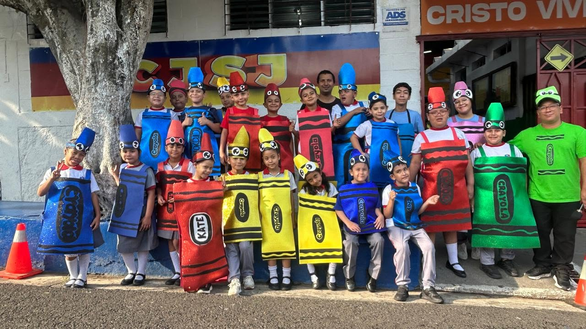
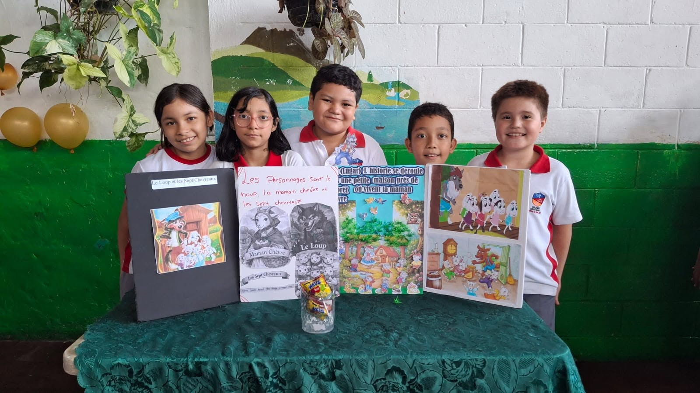
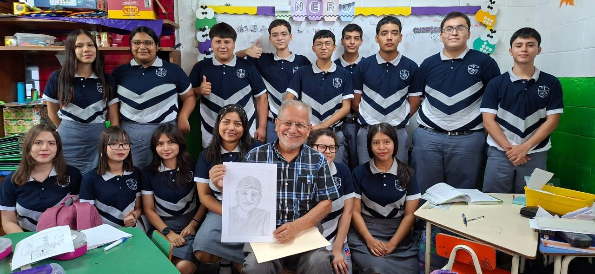
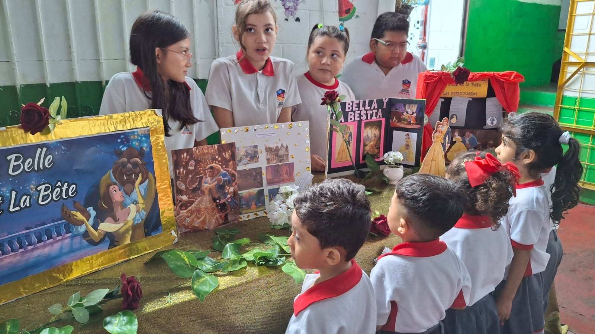
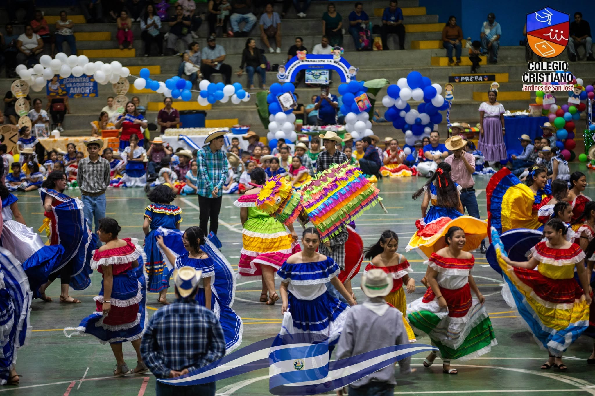
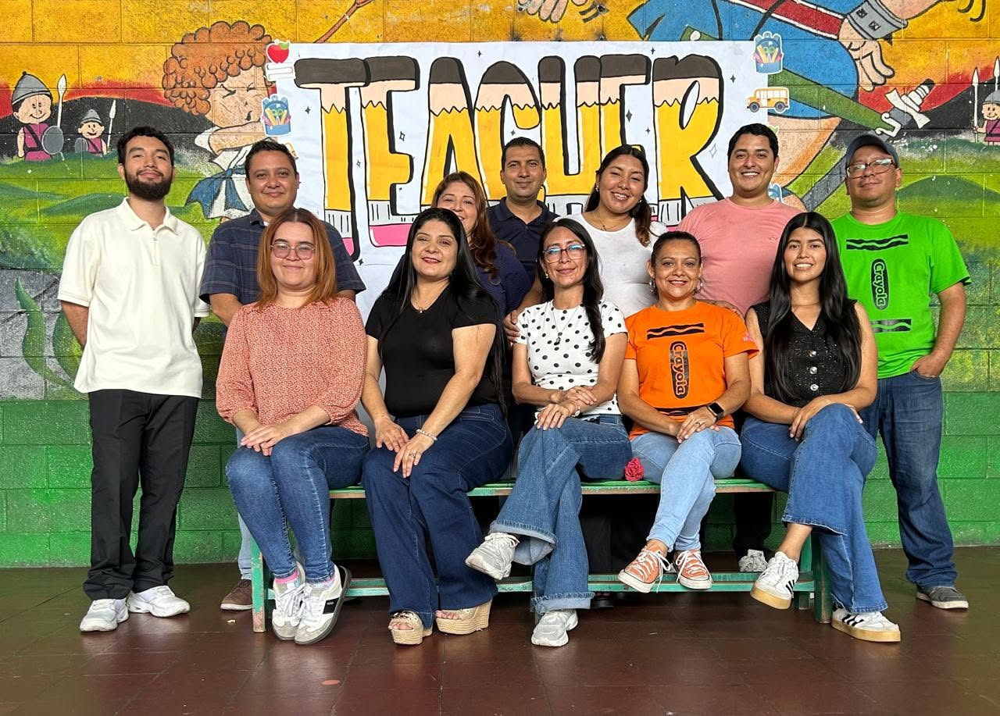

Misión
Brindar una educación cristiana de calidad que forme líderes con identidad, disciplina y sentido de servicio.
Educación cristiana con propósito
En el Colegio Cristiano Jardines de San José creemos en una educación integral que acompaña el crecimiento académico, espiritual y personal de cada estudiante.
Conoce más Ir a la plataformaQuiénes somos
Brindar una educación cristiana de calidad que forme líderes con identidad, disciplina y sentido de servicio.
Ser un referente educativo que impacte positivamente a la comunidad con estudiantes íntegros y comprometidos.
Fomentamos el aprendizaje, la creatividad, el respeto y la fe en cada etapa del desarrollo de nuestros estudiantes.
Nuestra Oferta Académica

Kínder

De 1.° a 9.° grado

1.° y 2.° año de Bachillerato
Diplomado en inglés e informática
Nuestros valores
Vivimos con una mirada cristiana y un corazón dispuesto a servir.
Promovemos la convivencia, la empatía y el valor de cada persona.
Formamos hábitos de estudio, esfuerzo y compromiso diario.
Buscamos crecer continuamente en conocimiento y conducta.
Galería



Dónde estamos
Acceso a la plataforma
Accede a calificaciones, comunicados y herramientas para estudiantes y padres.
Ir a la plataforma